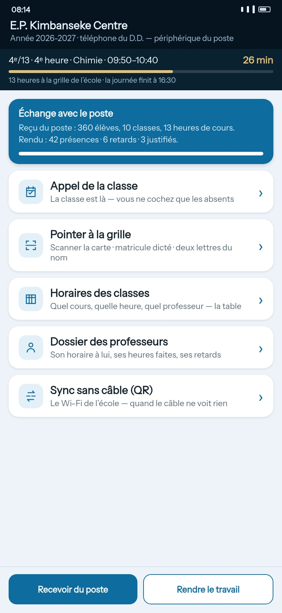
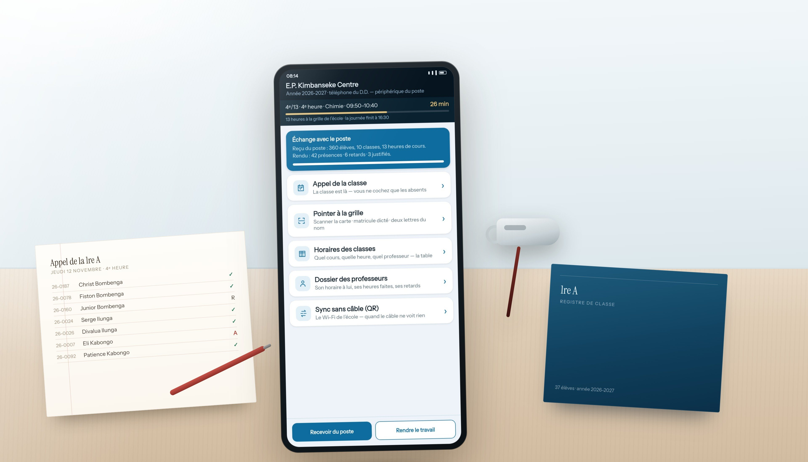
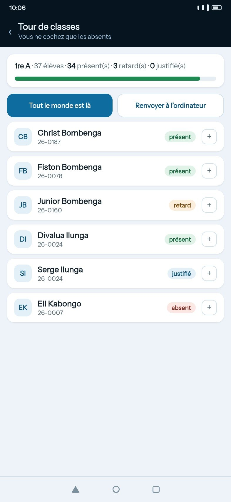
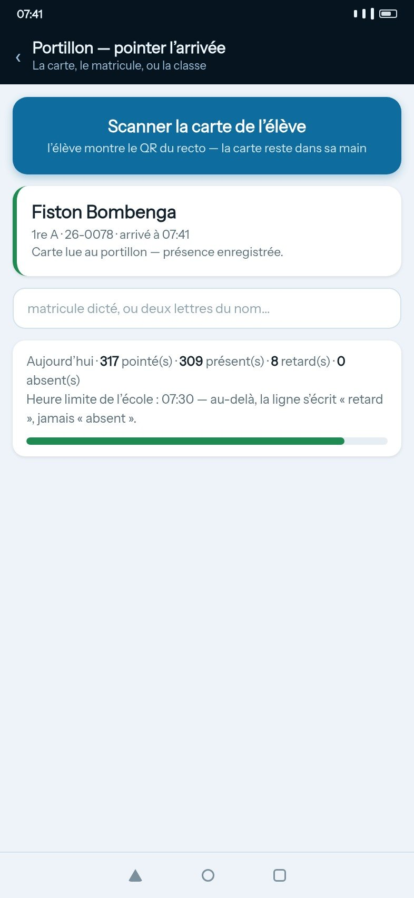
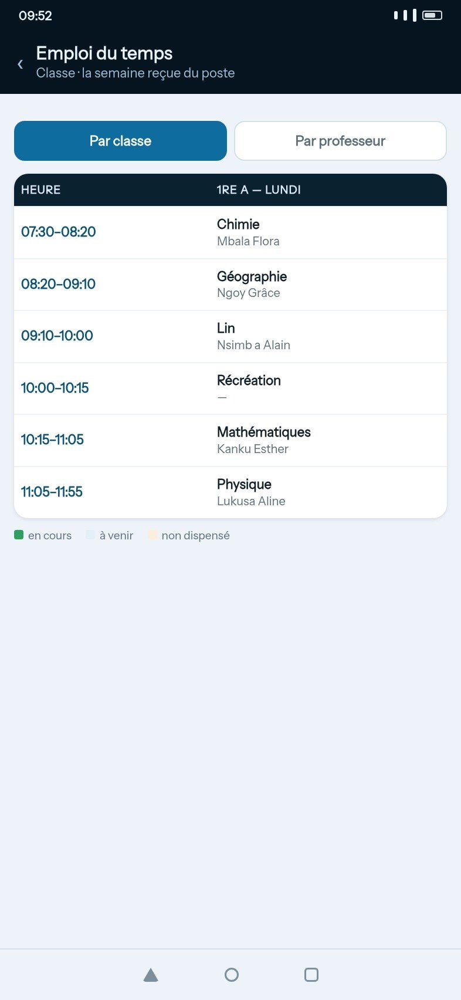
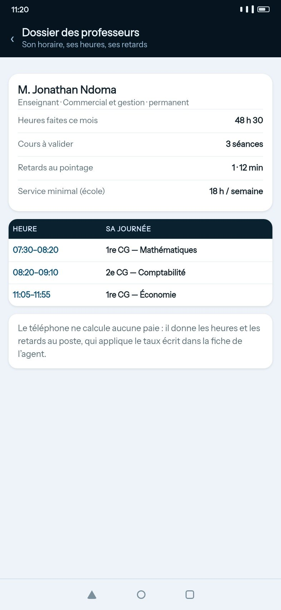
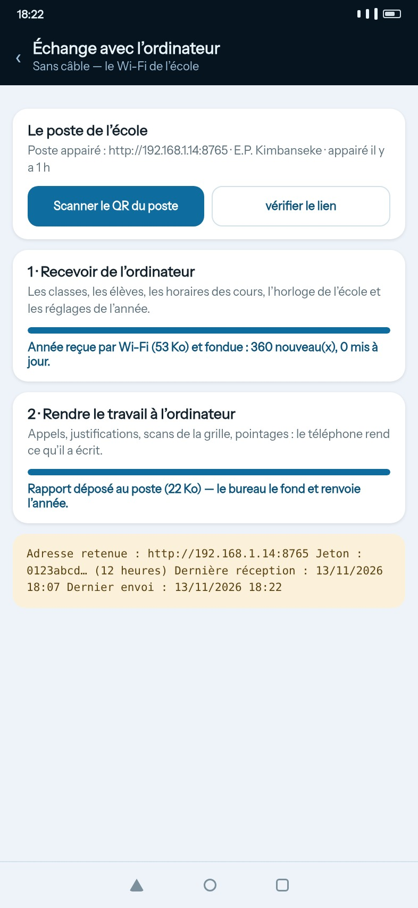

Le Directeur de Discipline ne reste pas assis. L'application Android livrée avec D.D- Spirity tient dans une main : elle pointe au portillon, fait l'appel dans la classe, suit les heures de cours et rapporte tout au poste — sans réseau, sans compte, sans rien installer sur le téléphone de l'école.


Sur le bureau du D.D., là où le cahier d'appel était :
C'est là que l'école écrit : les élèves, les classes, les horaires, les cartes, la paie, les documents officiels. Le poste tient le fichier unique de l'année.
C'est là que le D.D. travaille debout : au portillon, dans la cour, au fond de la classe. Il ne crée rien — il reçoit les listes du poste et lui rend son travail.
À retenir avant de télécharger : les deux se téléchargent ensemble. Le poste installe le registre de l'année ; l'application, elle, ne contient rien tant qu'elle n'a pas reçu les listes du poste. Un téléphone seul ne sert à rien — c'est un périphérique, pas un deuxième bureau.
Trois moments, et rien d'autre : l'entrée, la classe, la sortie. Chaque geste laisse une trace datée, signée du nom de la session ouverte sur l'ordinateur du bureau.
Les élèves passent. L'élève montre sa carte : le téléphone lit le QR, affiche son nom et sa classe, et enregistre l'arrivée. Plus de matricule à recopier sur un cahier.
L'appel de la 1re A : la liste est déjà là, dans l'ordre du registre. On ne coche que les absents — un bouton dit « tout le monde est là ». La progression et le mot « appel terminé » disent que la feuille est finie.
La barre de l'heure de cours compte à rebours, et la sonnerie de fin d'heure tombe pendant que l'application est ouverte. Les professeurs attendus, leurs heures faites et leurs retards se lisent pendant le tour.
Le travail se rend au poste en un geste, par le câble ou par le Wi-Fi de l'école. Le téléphone garde sa copie : l'historique des appels reste consultable des deux côtés, classé par mois.
C'est une décision, pas un manque : le téléphone est un périphérique d'entrée. Chaque écran fait un geste, et le geste suivant se voit tout de suite.





C'est la question qu'on nous pose à chaque installation : « et si le téléphone ne voit pas l'ordinateur ? » Il y a deux chemins, et le second existe pour les téléphones récents.
Ce que le téléphone ne fait pas, et c'est volontaire : il ne crée ni élève, ni classe, ni compte, ne calcule aucune paie et ne décide d'aucune sanction. Il ne peut pas perdre le fichier de l'école, puisqu'il ne le détient pas.
L'application est livrée avec le poste : on installe l'ordinateur, puis on pose l'APK sur le téléphone du Directeur de Discipline. C'est tout.
L'installation d'un APK demande d'autoriser l'installation depuis cette source une seule fois (Android demande la confirmation : c'est normal, l'application ne vient pas du Play Store parce qu'elle n'a pas besoin d'Internet ni de compte Google).
Le téléphone du Directeur de Discipline : portillon, appel de classe, tour de cours. Se remplit depuis le poste.
—Le registre de l'école : élèves, cartes, horaires, paie, documents officiels. C'est lui qui alimente le téléphone.
—Bientôt disponible signifie qu'aucun fichier n'est encore publié pour ce format. Aucun lien ne mène ailleurs.